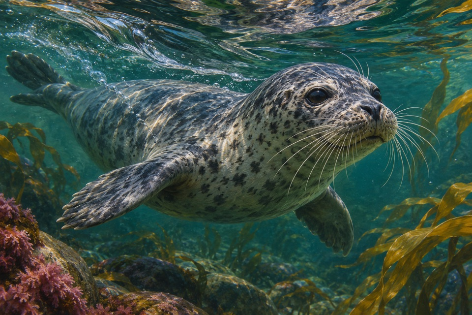

Source-system observation
Harbor seals located and followed an artificial hydrodynamic trail using their vibrissal system in the reported task.
The trained artificial-wake result does not establish performance for all prey and water conditions.
Measure tracking accuracy relative to the age and shape of a wake.
Source context. Harbor seal (Phoca vitulina)
Targeted primary source check · Qualified human review pending

Harbor seals located and followed an artificial hydrodynamic trail using their vibrissal system in the reported task.
The trained artificial-wake result does not establish performance for all prey and water conditions.